!pip install --upgrade ts2vg14 Лабораторна робота № 14
Тема. Графодинамічний аналіз часових рядів
Мета. Навчитися використовувати елементи теорії графів для отримання спектральних і топологічних мір складності систем, що характеризуються часовими рядами
14.1 Теоретичні відомості
У попередній роботі ми ввели поняття мір складності для найпростіших графів та поширених мережних моделей, порівняли деякі з мір складності. У даній роботі ми продемонструємо сучасні методи перетворення часових рядів у мережу (граф) з подальшим дослідженням відповідних спектральних і топологічних мір складності. Ми також покажемо, що вказані міри можна співставляти з динамікою вихідного часового ряду (звідси графодинаміка) і якщо вони є інформативними щодо можливих змін власне ряду, то їх можливо використовувати для побудови індикаторів характерної динаміки складних систем.
Більшість складних систем інформують про свою структурну та динамічну природу, генеруючи послідовність певних характеристик, що можна представити часовими рядами. Останніми роками розроблено цікаві алгоритми перетворення часових рядів у мережу, що дозволяє розширити діапазон відомих характеристик часових рядів навіть до мережних [1–3]. Останнім часом було запропоновано декілька підходів до перетворення часових послідовностей у складні мережеподібні відображення. Ці методи можна умовно розділити на три класи [4]. Перший базується на вивченні “видимості” послідовних значень часового ряду і називається графом видимості (Visibility Graph, VG) [4,5].
Другий аналізує взаємне наближення різних відрізків часової послідовності і використовує техніку рекурентного аналізу [4] (див. лабораторні 2 і 3). Рекурентна діаграма відображає існуючу повторюваність фазових траєкторій у вигляді бінарної матриці, елементами якої є одиниці або нулі, залежно від того, чи є близькими (рекурентними) із заданою точністю чи ні обрані точки фазового простору динамічної системи. Рекурентна діаграма легко трансформується в матрицю суміжності, за якою розраховуються спектральні та топологічні характеристики графа [6].
Нарешті, якщо в основу формування зв’язків елементів графа покласти кореляційні відношення між ними, то отримаємо кореляційний граф [4]. Для побудови та аналізу властивостей кореляційного графа необхідно сформувати з кореляційної матриці матрицю суміжності. Для цього необхідно ввести величину, яка для кореляційного поля буде слугувати відстанню між корельованими агентами. Така відстань може бути представлена як \(d_{ij}=\sqrt{2(1-C_{ij})}\), де \(C_{ij}\) — це коефіцієнт кореляції між двома активами. Так, якщо коефіцієнт кореляції між двома активами значний, то відстань між ними невелика, і, починаючи з певного критичного значення \(d_{cr}\), активи можна вважати зв’язаними на графі. Для матриці суміжності це означає, що вони є суміжними на графі. В іншому випадку активи не є суміжними. У цьому випадку умова зв’язності графа є обов’язковою умовою.
Основною метою таких методів є точне відтворення інформації, що зберігається в часових рядах, в альтернативній математичній структурі, щоб згодом можна було використовувати потужні інструменти теорії графів для характеристики часових рядів з іншої точки зору з метою подолання розриву між нелінійним аналізом часових рядів, динамічних систем і теорією графів.
У даній роботі розглянемо лише алгоритм графа видимості (див. опис у лаб. 11).
14.1.1 Пакет ts2vg
Для подальшої побудови класичного VG або його горизонтального аналогу, ми будемо використовувати бібліотеку ts2vg. Пакет ts2vg надає високопродуктивну реалізацію алгоритму для побудови графів видимості з даних часових рядів, вперше представленого Лукасом Лакасою та ін. [5].
Графи видимості та деякі з їхніх властивостей (наприклад, степеневі розподіли) обчислюються швидко та ефективно навіть для часових рядів з мільйонами спостережень. Для обчислення графів використовується ефективний алгоритм “розділяй і володарюй”, коли це можливо [7].
14.1.1.1 Встановлення
Остання випущена версія ts2vg доступна на PyPI і може бути легко встановлена шляхом запуску наступної команди:
14.1.1.2 Підтримувані типи графів
14.1.1.2.1 Основні типи
14.1.1.2.2 Доступні варіації
- Зважений граф видимості (через параметр
weighted). - Направлений граф видимості (через параметр
directed). - Параметричний граф видимості [9] (через параметри
min_weightтаmax_weight). - Граф обмеженої проникної видимості [10,11] (через параметр
penetrable_limit).
Зверніть увагу, що кілька варіантів графів можна комбінувати і використовувати одночасно. Із більш детальною документацією можна ознайомитись на сайті бібліотеки ts2vg.
14.1.1.2.3 Сумісність з іншими бібліотеками
Отримані графи можуть бути легко перетворені в графові об’єкти з інших поширених графових бібліотек Python, таких як igraph, NetworkX та SNAP для подальшого аналізу.
Для цього передбачені наступні методи:
as_igraph();as_network();as_snap().
14.2 Хід роботи
Спочатку імпортуємо необхідні модулі для подальшої роботи:
import matplotlib.pyplot as plt
import matplotlib.dates as mdates
import numpy as np
import neurokit2 as nk
import yfinance as yf
import pandas as pd
import networkx as nx
import scienceplots
from sklearn import preprocessing
from tqdm import tqdm
from ts2vg import NaturalVG, HorizontalVG
from scipy.spatial import distance
%matplotlib inlineІ виконаємо налаштування рисунків для виведення:
plt.style.use(['science', 'notebook', 'grid']) # стиль, що використовуватиметься
# для виведення рисунків
size = 16
params = {
'figure.figsize': (8, 6), # встановлюємо ширину та висоту рисунків за замовчуванням
'font.size': size, # розмір фонтів рисунку
'lines.linewidth': 2, # товщина ліній
'axes.titlesize': 'small', # розмір титулки над рисунком
'axes.labelsize': size, # розмір підписів по осям
'legend.fontsize': size, # розмір легенди
'xtick.labelsize': size, # розмір розмітки по осі Ох
'ytick.labelsize': size, # розмір розмітки по осі Ох
"font.family": "Serif", # сімейство стилів підписів
"font.serif": ["Times New Roman"], # стиль підпису
'savefig.dpi': 300, # якість збережених зображень
'axes.grid': False # побудова сітки на самому рисунку
}
plt.rcParams.update(params) # оновлення стилю згідно налаштуваньРозглянемо можливість використання графодинамічних показників у якості індикаторів або індикаторів-передвісників кризових явищ. Для прикладу завантажимо часовий ряд криптовалютного індексу Біткоїна за весь період до 1-го грудня 2023 року, що надається веб-ресурсом Yahoo! Finance:
symbol = 'BTC-USD' # символ індексу
end = '2023-12-01' # кінцевий період
data = yf.download(symbol, end=end) # вивантажуємо дані
time_ser = data['Close'].copy() # зберігаємо саме ціни закриття
date_in_num = mdates.date2num(time_ser.index)
xlabel = 'time, days' # підпис по вісі Ох
ylabel = symbol # підпис по вісі ОуYF.download() has changed argument auto_adjust default to True[*********************100%***********************] 1 of 1 completed
Увага
Виконайте цей блок, якщо хочете зчитати дані не з Yahoo! Finance, а із власного файлу. Зрозуміло, що й аналіз результатів, і висновки залежать від того, з яким рядом ми працюємо
symbol = 'sMpa11' # Символ індексу
path = "databases\sMpa11.txt" # шлях зчитування файлу
data = pd.read_csv(path, # зчитування даних
names=[symbol])
time_ser = data[symbol].copy() # копіюємо значення кривої
# "напруга-видовження" до окремої змінної
date_in_num = mdates.date2num(time_ser.index)
xlabel = r'$\varepsilon$' # підпис по вісі Ох
ylabel = symbol # підпис по вісі ОуВиведемо досліджуваний ряд:
fig, ax = plt.subplots() # Створюємо порожній графік
ax.plot(time_ser.index, time_ser.values) # Додаємо дані до графіка
ax.legend([symbol]) # Додаємо легенду
ax.set_xlabel(xlabel) # Встановимо підпис по вісі Ох
ax.set_ylabel(ylabel) # Встановимо підпис по вісі Oy
plt.xticks(rotation=45) # оберт позначок по осі Ох на 45 градусів
plt.savefig(f'{symbol}.jpg') # Зберігаємо графік
plt.show(); # Виводимо графік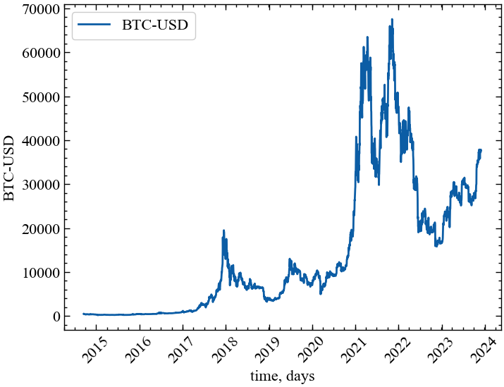
Як і до цього, визначимо функцію для перетворення ряду (його стандартизації або знаходження прибутковостей). Для цього оголосимо функцію transformation(), що прийматиме на вхід часовий сигнал, тип ряду, і повертатиме його перетворення. Як показували попередні дослідження авторів, вихідне представлення часового ряду надає найбільш інформативне представлення для побудови графа. Тим не менш, ми допускаємо, що, наприклад, прибутковості фізичного сигналу можуть мати краще графове представлення, тому і визначаємо цю функцію в даній роботі.
def transformation(signal, ret_type):
for_graph = signal.copy()
if ret_type == 1: # Зважаючи на вид ряду, виконуємо
# необхідні перетворення
pass
elif ret_type == 2:
for_graph = for_graph.diff()
elif ret_type == 3:
for_graph = for_graph.pct_change()
elif ret_type == 4:
for_graph = for_graph.pct_change()
for_graph -= for_graph.mean()
for_graph /= for_graph.std()
elif ret_type == 5:
for_graph = for_graph.pct_change()
for_graph -= for_graph.mean()
for_graph /= for_graph.std()
for_graph = for_graph.abs()
elif ret_type == 6:
for_graph -= for_graph.mean()
for_graph /= for_graph.std()
for_graph = for_graph.dropna().values.squeeze()
return for_graphПовертаємо той самий вихідний сигнал.
Далі задаємо параметри досліджуваного графа. Для подальших розрахунків ми будемо використовувати одні й ті ж самі значення часового вікна, кроку й типу ряду.
signal = time_ser.copy()
ret_type = 1 # вид ряду: 1 - вихідний,
# 2 - детрендований (різниця між теп. значенням та попереднім)
# 3 - прибутковості звичайні,
# 4 - стандартизовані прибутковості,
# 5 - абсолютні значення (волатильності)
# 6 - стандартизований ряд
for_graph = transformation(signal, ret_type) # перетворення сигналу
window = 250 # розмір вікна
tstep = 1 # крок вікна
graph_type = 'classic' # тип графу: classic, horizontal
length = len(time_ser)14.2.1 Побудова графа
Оскільки побудова графа для всього часового ряду може зайняти досить великий проміжок часу, ми будемо будувати граф видимості лише для його фрагменту. Для цього визначимо параметри index_begin та index_end, які будуть вказувати на початок відліку побудови та кінець. Для класичного графа видимості маємо:
index_begin = 1700
index_end = 2800
date = date_in_num[index_begin:index_end]
if graph_type == 'classic':
g = NaturalVG(directed=None).build(for_graph[index_begin:index_end], xs=date)
pos1 = g.node_positions()
nxg = g.as_networkx()
if graph_type == 'horizontal':
g = HorizontalVG(directed=None).build(for_graph[index_begin:index_end], xs=date)
pos1 = g.node_positions()
nxg = g.as_networkx()
graph_plot_options = {
'with_labels': False,
'node_size': 0,
'node_color': [(0, 0, 0, 1)],
'edge_color': [(0, 0, 0, 0.15)],
}fig, ax = plt.subplots(1, 2, figsize=(15, 8))
nx.draw_networkx(nxg, ax=ax[0], pos=pos1, **graph_plot_options)
ax[0].tick_params(bottom=True, labelbottom=True)
ax[0].plot(time_ser.index[index_begin:index_end], for_graph[index_begin:index_end], label=fr"{ylabel}")
ax[0].set_title(f'Зв\'язки видимості для {ylabel}', pad=10)
ax[0].set_xlabel(xlabel)
ax[0].set_ylabel(f"{ylabel}")
ax[0].legend(loc='upper right')
ax[0].tick_params(axis='x', labelrotation=45)
ax[1].set_title(f'Графове представлення для {symbol}', pad=10)
# визначаємо позицію вузлів на графі
pos2 = nx.spring_layout(nxg, k=0.15, iterations=100)
# розраховуємо ступеневу центральність
degCent = nx.degree_centrality(nxg)
# створити список розмірів вершин на основі ступеневої центральності
node_sizes = [v*100 for v in degCent.values()]
# кольори вузлів на основі їх ступеневої центральності
node_colors = [v for v in degCent.values()]
# будуємо граф
nx.draw_networkx(nxg, ax=ax[1], pos=pos2,
node_size=node_sizes,
node_color=node_colors,
with_labels=False,
cmap=plt.get_cmap('plasma'))
# присвоюємо мінімальне та максимальне значення
# ступеневої центральності для побудови теплової шкали
vmin = np.asarray(list(degCent.values())).min()
vmax = np.asarray(list(degCent.values())).max()
sm = plt.cm.ScalarMappable(cmap=plt.get_cmap('plasma'),
norm=plt.Normalize(vmin=vmin, vmax=vmax))
cb = plt.colorbar(sm, ax=ax[1])
cb.set_label('Ступенева центральність')
plt.savefig(f"Time_ser_connections_symbol={symbol}_idx_beg={index_begin}_\
idx_end={index_end}_sertype={ret_type}_network_type={graph_type}.jpg", bbox_inches="tight", dpi=1000)
plt.show()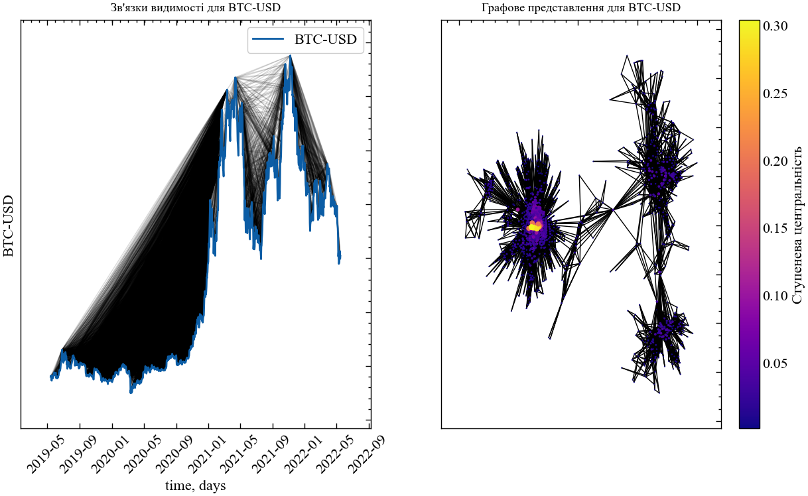
Як ми можемо бачити з представленого рисунку, три послідовних зростання та спадання ціни BTC у 2021-2022 роках характеризуються доволі високим ступенем видимості в передкризовий період. Також дані піки утворюють орієнтовно 3 кластери із високою ступеневою центральністю. Крахові події на криптовалютному ринку можна розглядати як графи переважного приєднання, де, можливо, ключову роль у цих підйомах та спадах можуть відігравати один або декілька “китів” ринку, котрі чинять найбільший вплив на ринок і спрямовують вектор уваги всіх трейдерів у тому чи іншому напрямі.
14.2.2 Віконна процедура
Далі будемо спостерігати за тим, як змінюються властивості мережі з плином часу. Для цього використаємо добре знайому нам процедуру рухомого вікна. У рамках цієї процедури дослідимо графодинаміку як спектральних, так і топологічних показників.
Для побудови парної динаміки конкретного індикатора та досліджуваного ряду визначимо функцію plot_pair:
def plot_pair(x_values,
y1_values,
y2_values,
y1_label,
y2_label,
x_label,
file_name, clr="magenta"):
fig, ax = plt.subplots()
ax2 = ax.twinx()
ax2.spines.right.set_position(("axes", 1.03))
p1, = ax.plot(x_values,
y1_values,
"b-", label=fr"{y1_label}")
p2, = ax2.plot(x_values,
y2_values,
color=clr,
label=y2_label)
ax.set_xlabel(x_label)
ax.set_ylabel(f"{y1_label}")
ax.yaxis.label.set_color(p1.get_color())
ax2.yaxis.label.set_color(p2.get_color())
tkw = dict(size=2, width=1.5)
ax.tick_params(axis='x', rotation=35, **tkw)
ax.tick_params(axis='y', colors=p1.get_color(), **tkw)
ax2.tick_params(axis='y', colors=p2.get_color(), **tkw)
ax2.legend(handles=[p1, p2])
plt.savefig(file_name + ".jpg")
plt.show();14.2.2.1 Спектральні характеристики
Спектральна теорія графів базується на вивченні властивостей графів через власні значення або власні вектори матриці суміжності \(A\) або матриці Лапласа (Laplacian matrix) \(L\) [12].
Нагадаємо, що стандартна матриця Лапласа для графа \(G\) визначається як
\[ L = D - A, \tag{14.1}\]
\(D\) — діагональна матриця \(G\), де \(i\)-ий діагональний елемент є ступенем вершини \(i\) в \(G\) [13], а \(A\) — матриця суміжності \(G\). У цій роботі ми представляємо спектральні характеристики для нормованої матриці Лапласа [14], яка визначається як
\[ \hat{L} = D^{-1/2}LD^{-1/2}. \tag{14.2}\]
Якщо \(\lambda\) — власне значення \(\hat{L}\), тоді \(\lambda \in [0, 2]\) [12]; тобто, нормалізуючи матрицю Лапласа, ми нормалізуємо власні значення.
AlgebraicCon = []
GraphEnergy = []
SpecMoment_3 = []
SpecRadius = []
SpecGap = []
NaturalConnectivity = []
GraphCompIdx = []for i in tqdm(range(0,length-window,tstep)):
# відбираємо фрагмент
fragm = time_ser.iloc[i:i+window].copy()
# виконуємо процедуру трансформації ряду
fragm = transformation(fragm, ret_type)
if graph_type == 'classic':
g = NaturalVG(directed=None).build(fragm)
pos = g.node_positions()
nxg = g.as_networkx()
if graph_type == 'horizontal':
g = HorizontalVG(directed=None).build(fragm)
pos = g.node_positions()
nxg = g.as_networkx()
# спектр власних значень матриці суміжності
adj_spectrum = nx.adjacency_spectrum(nxg).real
# сортуємо власні значення в порядку зростання
sorted_adj_spectrum = np.sort(adj_spectrum)
# розраховуємо алгебраїчну зв'язність
alg_con = nx.algebraic_connectivity(nxg, normalized=True, method='tracemin_lu')
# розраховуємо енергію графа
graph_en = np.sum(np.abs(adj_spectrum))
# розраховуємо спектральний розрив
spec_gap = sorted_adj_spectrum[-1] - sorted_adj_spectrum[-2]
# розраховуємо спектральний радіус
spec_rad = np.max(np.abs(adj_spectrum))
# розраховуємо спектральний момент
spec_mom_3 = np.mean(adj_spectrum ** 3)
# розраховуємо природню зв'язність
nat_con = np.log(np.mean(np.exp(adj_spectrum)))
# індекс складності графа
largest_eigenvalue = float(max(adj_spectrum))
n = nx.number_of_nodes(nxg)
c = (largest_eigenvalue - 2*np.cos(np.pi/(n+1)))/(n - 1 - 2*np.cos(np.pi/(n+1)))
gic = 4*c*(1-c)
AlgebraicCon.append(alg_con)
GraphEnergy.append(graph_en)
SpecRadius.append(spec_rad)
SpecGap.append(spec_gap)
SpecMoment_3.append(spec_mom_3)
NaturalConnectivity.append(nat_con)
GraphCompIdx.append(gic)100%|██████████| 3112/3112 [02:14<00:00, 23.06it/s]Зберігаємо абсолютні значення у текстовому документі. Також готуємо мітки для рисунків та назви збережених мір:
ind_names = ['algebraic_conn', 'graph_energy', 'spectral_radius',
'spectral_grap', 'spectral_moment_3', 'natural_connectivity', 'graph_complexity_index']
indicators = [AlgebraicCon, GraphEnergy, SpecRadius,
SpecGap, SpecMoment_3, NaturalConnectivity, GraphCompIdx]
measure_labels = [r'$\lambda_2$', r'$E$', r'$R$', r'$\delta$', r'$m_3$', r'$N_c$', r'$GIC$']
file_names = []
for i in range(len(ind_names)):
name = f"{ind_names[i]}_symbol={symbol}_wind={window}_step={tstep}_seriestype={ret_type}_graph_type={graph_type}"
np.savetxt(name + ".txt", indicators[i])
file_names.append(name)14.2.2.1.1 Алгебраїчна зв’язність
Щодо власних значень матриці Лапласа, однією з основних характеристик, яку ми можемо отримати, є алгебраїчна зв’язність (algebraic connectivity) \(\lambda_2\) графа, яка відповідає другому найменшому власному значенню матриці. Цей показник відображає кількість роз’єднаних компонент. Для незв’язного графа \(\lambda_2\) буде дорівнювати нулю, а для графа з вищою щільністю зв’язків \(\lambda_2\) буде більшим. Використовуючи цей показник, можливо визначити відмовостійкість і синхронізованість досліджуваної системи.
plot_pair(time_ser.index[window:length:tstep],
time_ser.values[window:length:tstep],
indicators[0],
ylabel,
measure_labels[0],
xlabel,
file_names[0],
clr="magenta")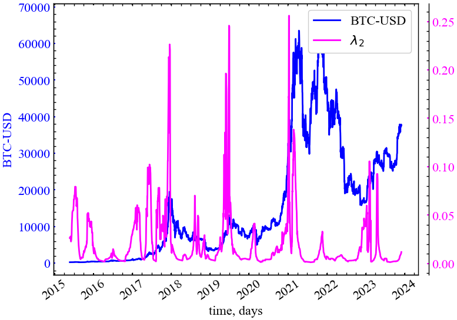
На Рис. 14.3 видно, що \(\lambda_2\) зростає в передкризові періоди часу, що говорить про зростання ступеня синхронізованності між трейдерами ринку в дані періоди часу. Мережа крипторинку набуває все більшої корельованості та стійкості. Подібна динаміка може вказувати на зростання узгодженності між великими гравцями ринку щодо своїх подальших дій на Біткоїні.
14.2.2.1.2 Енергія графа
З власних значень матриці суміжності \(A\) з \(G\) можна визначити таку міру, як енергія графа (graph energy) \(E(G)\) [15,16]:
\[ E = E(G) = \sum_{i=1}^{N}\left| \lambda_i \right|. \tag{14.3}\]
Подібно до \(\lambda_2\), ми маємо повністю роз’єднаний граф, коли \(E(G)=0\). Для кожного \(\lambda_i > 0\) існує багато ребер \(e_{ij}\), які визначають високу та ефективну зв’язність \(G\).
plot_pair(time_ser.index[window:length:tstep],
time_ser.values[window:length:tstep],
indicators[1],
ylabel,
measure_labels[1],
xlabel,
file_names[1],
clr="crimson")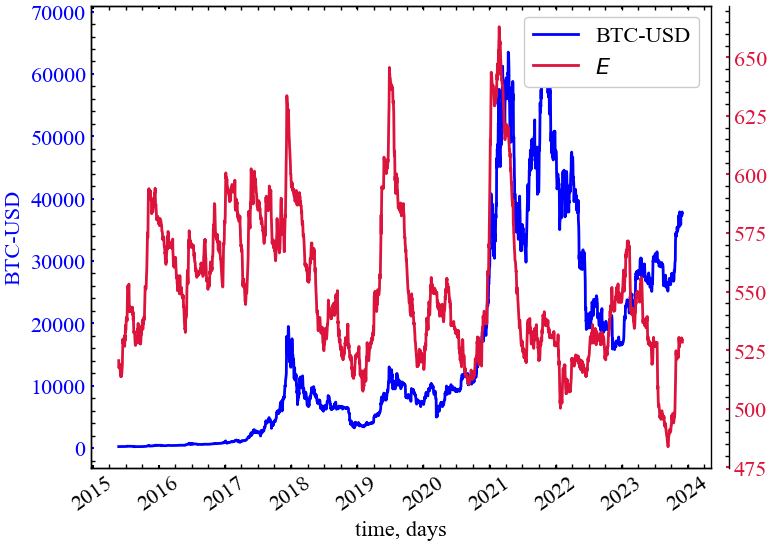
Рис. 14.4 демонструє, що в періоди відносної стабільності \(E\) залишається на досить низькому рівні, що вказує на роз’єднаність трейдерів ринку в подібні періоди. Як покупці, так і продавці діють досить некорельовано. У передкризові періоди енергія починає зростати, що вказує на зростання ефективності роботи між гравцями ринку та їх зв’язності.
14.2.2.1.3 Cпектральний радіус
Крім наведених вище мір, можна визначити такі міри, як спектральний радіус (spectral radius), яка є найбільшим абсолютним власним значенням матриці \(A\):
\[ R = R(G) = \max_{1\leq i \leq N}\left| \lambda_i \right|. \tag{14.4}\]
plot_pair(time_ser.index[window:length:tstep],
time_ser.values[window:length:tstep],
indicators[2],
ylabel,
measure_labels[2],
xlabel,
file_names[2],
clr="orange")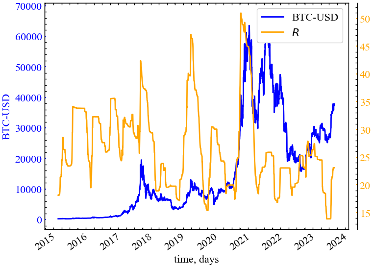
На даному рисунку (Рис. 14.5) видно, що спектральний радіус зростає в кризові й передкризові періоди, що вказує на зростання корельованості графа Біткоїна та синхронізованості дій трейдерів.
14.2.2.1.4 Cпектральний розрив
Проранжувавши власні значення матриці суміжності \(G\) у неспадаючому порядку, тобто \(\lambda_1 \leq \lambda_2 \leq ... \leq \lambda_n\), ми можемо визначити таку міру, як спектральний розрив (spectral gap):
\[ \delta = \delta(G) = \lambda_{n} - \lambda_{n-1} \tag{14.5}\]
для якого \(\lambda_n\) — перше найбільше власне значення \(\hat{L}\), а \(\lambda_{n-1}\) друге найбільше власне значення. Спектральний розрив показує швидкість синхронізації в досліджуваній мережі. Чим він більший, тим більш взаємопов’язаними є вершини і тим складнішим є граф.
plot_pair(time_ser.index[window:length:tstep],
time_ser.values[window:length:tstep],
indicators[3],
ylabel,
measure_labels[3],
xlabel,
file_names[3],
clr="darkgreen")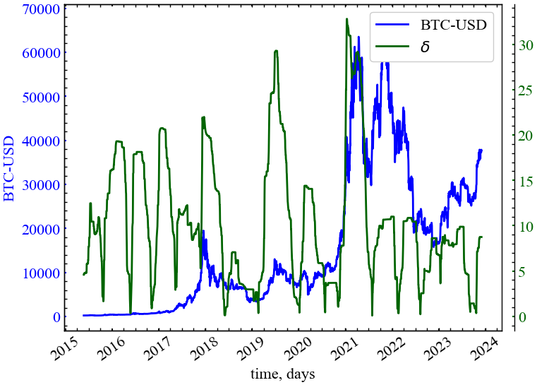
Рис. 14.6 демонструє, що спектральний розрив також є показником синхронізованності ринку в передкризові період. Однак, із динаміки даного показника можна сказати, що в моменти криз найбільшу кількість інформації починає нести найбільше власне значення матриці Лапласа. Можна припустити, що друге і третє також можуть слугувати в якості індикаторів крахових подій, але найбільше власне значення в даному випадку представляється найкращим рішенням.
14.2.2.1.5 Cпектральний момент
Спектральною мірою складності, яку ми також хотіли б представити є \(k\)-й спектральний момент (spectral moment). Для невід’ємного цілого числа \(k\), \(k\)-ий спектральний момент визначається як
\[ m_k = m_k(G) = \sum_{i=1}^{N}\lambda_{i}^{k}, \tag{14.6}\]
де \(m_k\) дорівнює кількості замкнутих обходів довжини \(k\) [17]. Кількість замкнутих обходів є важливим показником для вимірювання складності системи. Як було показано в роботі Ву та ін. [18], використовуючи кількість замкнутих обходів всієї довжини, ми можемо виміряти складність графа та надлишковість альтернативних найкоротших шляхів. Отже, більші значення \(m_k\) відповідають більшій складності мережі. Для подальших обчислень ми обрали \(k=3\).
plot_pair(time_ser.index[window:length:tstep],
time_ser.values[window:length:tstep],
indicators[4],
ylabel,
measure_labels[4],
xlabel,
file_names[4],
clr="chocolate")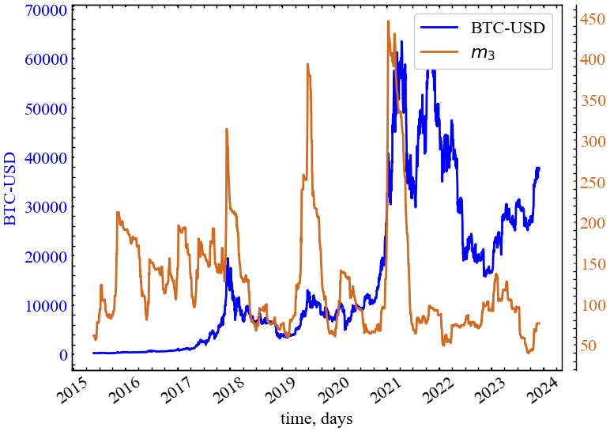
З динаміки \(m^3\) видно, що найбільш суттєвим ступенем синхронізованності характеризувалась предкризова динаміка 2018, середини 2019 і 2021 років. У ці періоди часу ми мали найбільшу кількість досить високих власних значень матриці Лапласа, а одже й достатньо високий ступінь синхронізації ринку в зазначені періоди.
14.2.2.1.6 Cпектральна природна зв’язність
Юнь та ін. [19] запропонували вимірювати “середнє власне значення” спектра суміжності графа \(G\). Було запропоновано називати цей показник природною зв’язністю (natural connectivity) або природним власним значенням:
\[ N_c = N_c(G) = \ln{\left( \frac{1}{N}\sum_{i=1}^{N}\exp{\lambda_i} \right)}. \tag{14.7}\]
Естрада [20], Ву та ін. [18] показали, що (14.7) є чутливою та надійною мірою стійкості мережі.
plot_pair(time_ser.index[window:length:tstep],
time_ser.values[window:length:tstep],
indicators[5],
ylabel,
measure_labels[5],
xlabel,
file_names[5],
clr="black")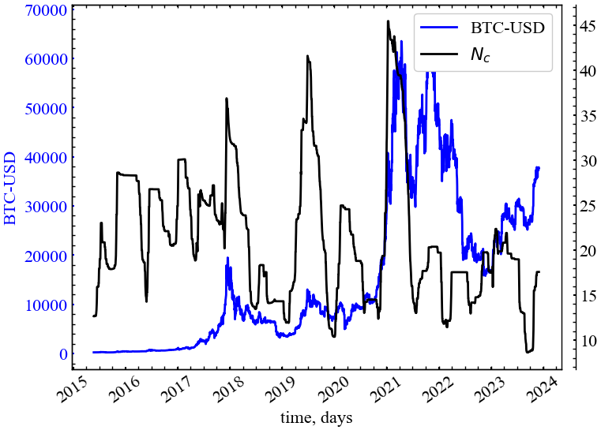
На Рис. 14.8 видно, що показник природної зв’язності зростає у передкризові періоди часу. Тобто, даний показник можна використовувати в якості індикатора або індикатора-передвісника крахових подій на ринку Біткоїна. Особливо характерним є зростання ступеня синхронізованності ринку напередодні 2018 року, що може вказувати на початкові стадії зміцнення стійкості криптовалютної мережі. Досить високий ступінь синхронізованності ринку можна спостерігати напередодні середини 2019 та початку 2021 років.
14.2.2.1.7 Індекс складності графа (Graph Index Complexity, GIC)
Індекс складності графа (Graph Index Complexity, GIC), запропонований Кім і Вільгельмом [21], є мірою складності графа. Він визначається як
\[ \mathrm{GIC} = 4c(1-c), \tag{14.8}\]
де
\[ c = \frac{\lambda_{\max} - 2\cos\!\left(\frac{\pi}{|V|+1}\right)} {|V| - 1 - 2\cos\!\left(\frac{\pi}{|V|+1}\right)}. \tag{14.9}\]
Тут \(\lambda_{\max}\) — найбільше власне значення матриці суміжності графа, а \(|V|\) — кількість його вершин. Це власне значення зазвичай лежить між середнім і максимальним ступенем вершини. Відповідно, більше значення \(GIC\) може свідчити про більш складну структуру сигналу, що, наприклад, може зумовлюватися частішими флуктуаціями сигналу.
plot_pair(time_ser.index[window:length:tstep],
time_ser.values[window:length:tstep],
indicators[6],
ylabel,
measure_labels[6],
xlabel,
file_names[6],
clr="crimson")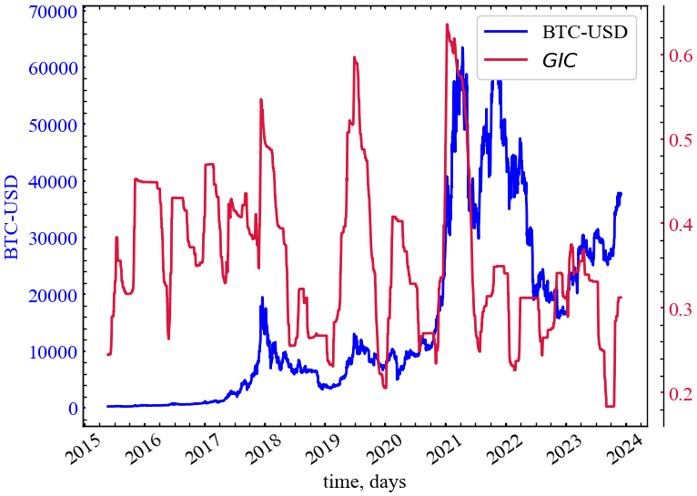
Індекс складності графа \(GIC\) на Рис. 14.9 поводиться як «термометр мікроструктури» часової динаміки BTC. У графі видимості найбільше власне значення матриці суміжності \(\lambda_{\max}\) (з якого обчислюється \(c\)) зростає, коли в мережі з’являються «хаби» та ширший розподіл ступенів — це відбувається, коли ціна часто чергує екстремуми й утворює багату локальну структуру зв’язків. Тоді \(GIC\) підвищується. Коли ж рух більш монотонний і довгі відтинки зростання або падіння «прибирають видимість» для далеких точок, спектральний радіус падає і \(GIC\) зменшується.
На часовій шкалі видно виразні «пульсації» \(GIC\), які синхронізуються зі зміною режимів ринку. Перед і під час турбулентних фаз — на піку ажіотажу 2017-2018 років, у ковідному перехідному періоді 2020 року та особливо в бумі 2020-поч. 2021 — індекс іде на верхні плато (до ~0.6–0.65). Це узгоджується з картиною «подрібненої» динаміки: у ціні багато коливань, з’являються виразні локальні максимуми/мінімуми, і граф набуває хабової структури. Після вибухових рухів або під час тривалих трендових спадів, як у 2018 та протягом більшої частини 2022 року, \(GIC\) провалюється до ~0.2-0.3: мережа стає ближчою до «ланцюжка», локальних трикутників і «коротких шляхів» менше, спектральний радіус зменшується. У 2019-му та на окремих ділянках 2021-2023 років індекс знову піднімається — це періоди відносної консолідації, де ціна коливається в діапазонах і формує багатшу локальну топологію. На завершенні вибірки (2023-2024) видно відновлення \(GIC\) разом із поступовим зростанням BTC, але без екстремумів, характерних для манії 2021-го: індекс тримається в середніх значеннях, що радше відповідає «організованому, але не перегрітому» ринку.
Узагальнюючи, високий \(GIC\) на Рис. 14.9 позначає турбулентні, «складні» відтинки ціни з частими переломами, тоді як низький \(GIC\) відбиває довгі спрямовані ходи або фази постстресової розрядки. Така поведінка узгоджується з очікуванням від спектральної міри складності для графів видимості і робить \(GIC\) зручним індикатором зміни режимів: він підростає на підході до періодів збагаченої мікроструктури руху та просідає, коли ринок входить у «чистий» тренд.
14.2.2.2 Топологічні міри центральності
Існує багато способів кількісно оцінити важливість вершини або ребра з точки зору певного мережного атрибуту, відображаючи таким чином топологію складної мережі.
DegreeMax = []
GlobalEigenvectorCentrality = []
GlobalClosenessCentrality = []
GlobalInformationCentrality = []
GlobalBetweennessCentrality = []
GlobalHarmonicCentrality = []for i in tqdm(range(0,length-window,tstep)):
# відбираємо фрагмент
fragm = time_ser.iloc[i:i+window].copy()
# виконуємо процедуру трансформації ряду
fragm = transformation(fragm, ret_type)
if graph_type == 'classic':
g = NaturalVG(directed=None).build(fragm)
pos = g.node_positions()
nxg = g.as_networkx()
if graph_type == 'horizontal':
g = HorizontalVG(directed=None).build(fragm)
pos = g.node_positions()
nxg = g.as_networkx()
# максимальний ступінь вершини
deg_max = max(dict(nxg.degree()).values())
# середній ступінь впливовості
glob_eigenvector_centrality = np.mean(list(nx.eigenvector_centrality_numpy(nxg).values()))
# середній ступінь близькості
glob_closeness_centrality = np.mean(list(nx.closeness_centrality(nxg).values()))
# середній ступінь інформаційності
glob_information_centrality = np.mean(list(nx.information_centrality(nxg).values()))
# максимальний ступінь посередництва
glob_betweenness_centrality = np.max(list(nx.betweenness_centrality(nxg).values()))
# середній ступінь гармонійності
glob_harm_centrality = np.mean(list(nx.harmonic_centrality(nxg).values()))
DegreeMax.append(deg_max)
GlobalEigenvectorCentrality.append(glob_eigenvector_centrality)
GlobalClosenessCentrality.append(glob_closeness_centrality)
GlobalInformationCentrality.append(glob_information_centrality)
GlobalBetweennessCentrality.append(glob_betweenness_centrality)
GlobalHarmonicCentrality.append(glob_harm_centrality)100%|██████████| 3112/3112 [21:39<00:00, 2.39it/s]Зберігаємо абсолютні значення у текстовому документі. Також готуємо мітки для рисунків та назви збережених:
ind_names = ['DegreeMax', 'GlobalEigenvectorCentrality', 'GlobalClosenessCentrality',
'GlobalInformationCentrality', 'GlobalBetweennessCentrality', 'GlobalHarmonicCentrality']
indicators = [DegreeMax, GlobalEigenvectorCentrality, GlobalClosenessCentrality,
GlobalInformationCentrality, GlobalBetweennessCentrality, GlobalHarmonicCentrality]
measure_labels = [r'$D_{max}$', r'$X$', r'$C$', r'$I$', r'$B$', r'$GHc$']
file_names = []
for i in range(len(ind_names)):
name = f"{ind_names[i]}_symbol={symbol}_wind={window}_step={tstep}_seriestype={ret_type}_graph_type={graph_type}"
np.savetxt(name + ".txt", indicators[i])
file_names.append(name)14.2.2.2.1 Максимальний ступінь вершини
Ступінь вершини (node degree) або ступенева центральність (degree centrality) є концептуально найпростішою метрикою для опису характеристик зв’язку однієї вершини в складній мережі. Вона може бути представлена у вигляді
\[ d_i = \sum_{j=1}^{N}A_{ij}, \tag{14.10}\]
де \(d_i\) підраховує кількість \(j\)-их ребер, що інцидентні вершині \(i\).
Окрім ступеня конкретної вершини, ми можемо визначити вершину з найбільшою кількістю інцидентних ребер. Кількість таких вершин можемо позначити як \(D_{max}\):
\[ D_{max} = \max_{i=1,...,N}d_i. \tag{14.11}\]
plot_pair(time_ser.index[window:length:tstep],
time_ser.values[window:length:tstep],
indicators[0],
ylabel,
measure_labels[0],
xlabel,
file_names[0],
clr="magenta")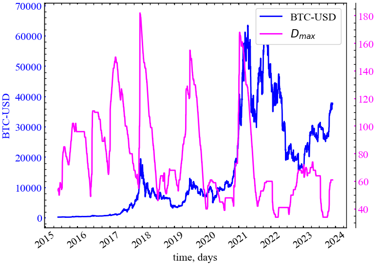
На даному рисунку (Рис. 14.10) видно, що максимальний ступінь вершини починає зростати в кризові та передкризові періоди, що вказує на зростання центральності одного або декількох вузлів. Можна припустити, що один або декілька трейдерів ринку починають концентрувати на собі увагу всіх інших діячів дотичних до ринку Біткоїна.
14.2.2.2.2 Середній ступінь впливовості
Ступінь впливовості (eigenvector centrality) обчислює оцінку важливості вузла шляхом додавання впливовостей його сусідів. Впливовість для вузла \(i\) — це \(i\)-й елемент власного вектора \(x\), пов’язаний з власним значенням \(\lambda\) максимального модуля, який є додатним. Такий власний вектор \(x\) визначається з точністю до мультиплікативної константи рівнянням
\[ \lambda x^{T} = x^{T}A, \tag{14.12}\]
де \(A\) — матриця суміжності графа \(G\). Наведене вище рівняння еквівалентне наступному:
\[ \lambda x_i = \sum_{j \to i}x_j. \tag{14.13}\]
Тобто, додавання ступенів впливовості попередників вершини \(i\) дає ступінь впливовості \(i\), помножену на \(\lambda\). У випадку неорієнтованих графів \(x\) також розв’язує знайоме рівняння \(Ax =\lambda x\).
За теоремою Перрона-Фробеніуса [22], якщо \(G\) сильно зв’язний, то існує єдиний власний вектор \(x\), і всі його елементи строго додатні.
Якщо \(G\) не є сильно зв’язним, то може існувати декілька лівих власних векторів, пов’язаних з \(\lambda\), причому деякі з їх елементів можуть дорівнювати нулю.
Примітка
Ступінь впливовості або центральність за власним вектором було введено Ландау [23] для шахових турнірів. Пізніше його знову відкрив Вей [24], а потім популяризував Кендалл [25] в контексті спортивного рейтингу. Берге ввів загальне визначення для графів, заснованих на соціальних зв’язках [26]. Бонаcіч [27] знову ввів центральність власного вектора і зробив її популярною в аналізі зв’язків.
Ця функція обчислює лівий домінуючий власний вектор, що відповідає додаванню впливовості попередників: це звичайний підхід. Щоб додати центральність наступників, спочатку переверніть граф за допомогою G.reverse().
Ця реалізація використовує SciPy sparse eigenvalue solver (ARPACK) для пошуку найбільшої пари власне значення/власний вектор за допомогою ітерацій Арнольді [28]
plot_pair(time_ser.index[window:length:tstep],
time_ser.values[window:length:tstep],
indicators[1],
ylabel,
measure_labels[1],
xlabel,
file_names[1],
clr="crimson")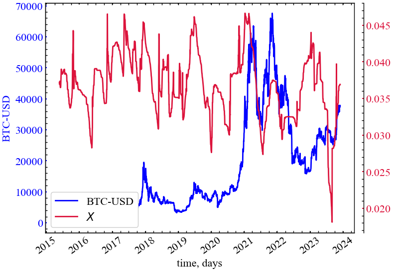
Середній ступінь впливовості характеризується зростанням у передкризові періоди, як правило, спадом під час криз. Подібно до спектральних показників, середній ступінь впливовсті вказує на зростання одного або декількох власних значень матриці суміжності графа та значущості власних векторів центральних вузлів торгівельного графа Біткоїна.
14.2.2.2.3 Середній ступінь близькості
У мережі відстань \(l_{ij}\) між вузлом \(i\) та вузлом \(j\) позначає кількість ребер, які з’єднують найкоротший шлях між цими двома вузлами. Спираючись на поняття довжини найкоротшого шляху між двома вузлами, ми можемо надати різні міри, які характеризують зв’язність всієї мережі. Однією з таких мір є центральність (centrality) або середній ступінь близькості (average degree connectivity) зв’язку між вершиною \(i\) та всіма іншими вершинами
\[ c_i = (N-1)\Bigg/\left( \sum_{j=1}^{N}l_{ij} \right), \tag{14.14}\]
що надають зворотнє середнє по всім найкоротшим шляхам від \(i\) до всіх вузлів \(j\).
Середнє арифметичне значення ступеня близькості для кожного \(i\)-го вузла дає нам глобальний (середній) ступінь близькості:
\[ C = \frac{1}{N}\sum_{i=1}^{N}c_i. \tag{14.15}\]
plot_pair(time_ser.index[window:length:tstep],
time_ser.values[window:length:tstep],
indicators[2],
ylabel,
measure_labels[2],
xlabel,
file_names[2],
clr="orange")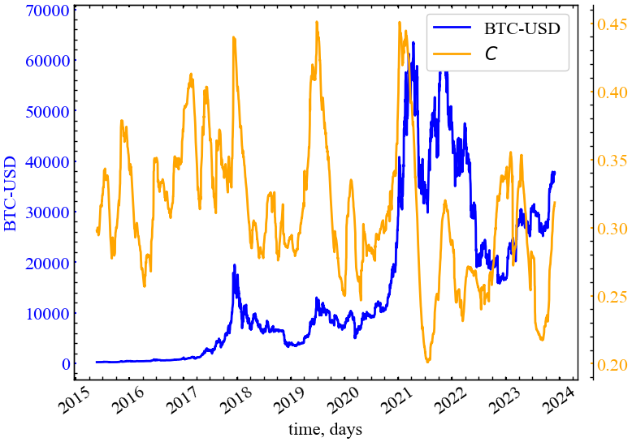
Як можна бачити з представленого рисунку (Рис. 14.12), глобальний ступінь близькості зростає в кризові та передкризові періоди, що вказує на спад довжини найкоротших шляхів у графі видимості криптовалютного ринку. Даний показник зростав напередодні останніх чотирьох років. Це вказує на те, що передодні досліджуваних торгівельних років між трейдерами зростав ступінь синхронізованності їх дій.
14.2.2.2.4 Середній ступінь інформаційності
Для визначення центральності будь-якого вузла \(i\) пропонується спочатку визначити його інформаційну зв’язність з іншими вузлами, тобто \(\left\{I_{ij} | j=1,..., N \right\}\). Середнє гармонійне значення інформації щодо шляху від вузла \(i\) до інших вузлів буде використовуватися для визначення ступеня інформаційності (information centrality) вузла \(i\). Зокрема, якщо \(I_i\) пов’язано з центральністю або інформаційністю вузла \(i\), то
\[ \hat{I_i} = \left( \frac{1}{N}\sum_{j=1}^{N}\frac{1}{I_{ij}} \right)^{-1}. \tag{14.16}\]
Згідно зі Стівенсоном та Зеленом [29], ступінь інформаційності можна обчислити шляхом інвертування простої матриці. Перш за все, ми визначаємо \(N \times N\) матрицю \(B=\left\{{b_{ij}} \right\}\), де
\[ b_{ij} = \begin{cases} 0 & \text{якщо} \,\, i \,\, та \,\, j \,\, суміжні,\\ 1 & \text{інакше}, \end{cases} \tag{14.17}\]
і \(b_{ii}=1+d_i\), де \(d_i\) ступінь вершини \(i\).
Далі, визначивши матрицю \(C = \left\{ c_{ij} \right\} = B^{-1}\), ми можемо розрахувати \(I_{ij}\) згідно рівняння
\[ I_{ij} = (c_{ii} + c_{jj} - 2c_{ij})^{-1}. \tag{14.18}\]
Елемент \(\sum_{j=1}^{N} 1/I_{ij}\) у рівнянні (14.16) можна переписати наступним чином:
\[ \sum_{j=1}^{N}c_{ii} + c_{jj} - 2c_{ij} = Nc_{ii} + T - 2R, \tag{14.19}\]
де \(T = \sum_{j=1}^{N}c_{jj}\) і \(R = \sum_{j=1}^{N}c_{ij}\).
Отже, ступінь інформаційності вузла \(i\) може бути представлений як
\[ I_i = \left[ (Nc_{ii} + T - 2R)/N \right]^{-1} = \left[ c_{ii} + (T-2R)/N \right]^{-1}. \tag{14.20}\]
Схожим чином, для вимірювання глобального ступеня інформаційності ми розглядаємо середнє арифметичне локального ступеня інформаційності:
\[ \hat{I} = \frac{1}{N}\sum_{i=1}^{N}I_i. \tag{14.21}\]
plot_pair(time_ser.index[window:length:tstep],
time_ser.values[window:length:tstep],
indicators[3],
ylabel,
measure_labels[3],
xlabel,
file_names[3],
clr="darkgreen")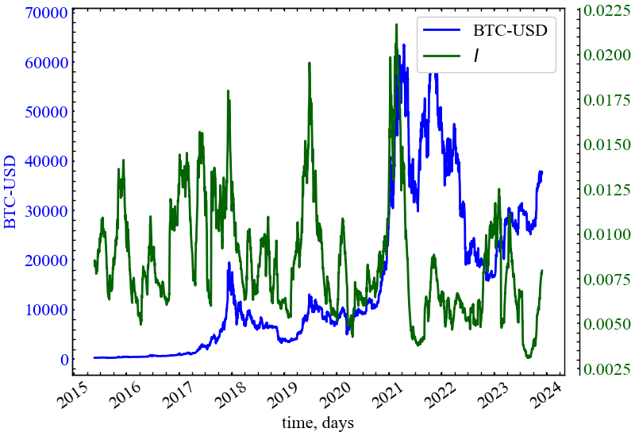
На (Рис. 14.13) видно, що глобальний ступінь інформаційності зростає в передкризові періоди, що є індикатором зростання ефективності передачі інформації між трейдерами ринку та зростання детермінованності динаміки ринку.
14.2.2.2.5 Максимальний ступінь посередництва
Іншою часто досліджуваною характеристикою вершин на основі шляхів є ступінь посередництва (betweenness centrality), яка вимірює частку всіх найкоротших шляхів у мережі, що проходять від \(i\) до \(j\) через вершину \(k\). Для загальної кількості найкоротших шляхів між вершинами \(i\) та \(j\), позначених як \(\sigma(i,j)\), і найкоротших шляхів, що проходять через дану вершину \(k(\sigma(i, j | k))\), ступінь посередництва можна визначити як
\[ b_k = \sum_{i,j=1; i,j \neq k}^{N} \sigma(i, j | k) / \sigma(i, j). \tag{14.22}\]
Щоб віднайти найбільшу кількість інформації, що проходить через конкретний \(k\)-й, ми вимірюємо максимальний ступінь посередництва, розглядаючи кожен \(k\)-ий вузол:
\[ B = \max_{i=1,...,N}b_{i}. \tag{14.23}\]
plot_pair(time_ser.index[window:length:tstep],
time_ser.values[window:length:tstep],
indicators[4],
ylabel,
measure_labels[4],
xlabel,
file_names[4],
clr="chocolate")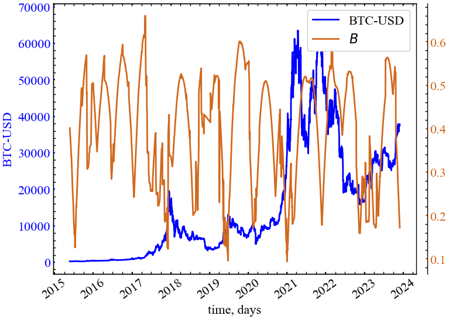
Як можна бачити, показник максимального ступеня посередництва спадає в передкризові періоди, що вказує на спад кількості посередників через яких може проходити інформація стосовно подальної динаміки Біткоїна. Це говорить про те, що на ринку зв’являються один або декілька трейдерів на котрих концентрується увага майже всіх інших, і зв’язок усіх трейдерів із найбільш впливомими може здійснюватись в один або декілька найкоротших шляхів.
14.2.2.2.6 Середній ступінь гармонійності
Марчіорі та Латора [30] запропонували міру, подібну до (14.14), яка називається ступенем гармонійності (harmonic centrality). Для заданого вузла \(j\) вона може бути визначена як
\[ Hc_{j} = \sum_{i=1, i \neq j}^{N} \left( l_{ij} \right)^{-1}, \tag{14.24}\]
де \((l_{ij})^{-1}=0\), якщо між вузлами \(i\) та \(j\) немає шляху. Середній ступінь гармонійності визначається через середнє арифметичне локальних ступенів гармонійності.
plot_pair(time_ser.index[window:length:tstep],
time_ser.values[window:length:tstep],
indicators[5],
ylabel,
measure_labels[5],
xlabel,
file_names[5],
clr="black")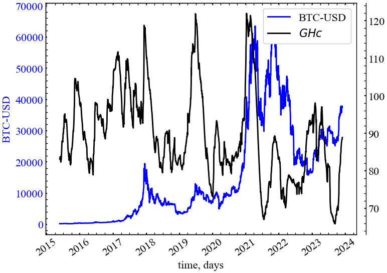
14.2.2.3 Асортативність
Асортативність (Assortativity) означає тенденцію в мережі до з’єднання вузлів з подібними властивостями, тоді як диассортативність виявляється у з’єднанні вузлів з різнорідними властивостями. Реальні мережі можуть демонструвати різну асортативність. Соціальні мережі, такі як взаємодії між вченими або корпоративними директорами, зазвичай мають позитивну асортативність. З іншого боку, технологічні та біологічні мережі, такі як електромережі, Інтернет, білкові взаємодії, нейронні мережі та харчові мережі, зазвичай виявляють негативну асортативність.
Далі буде представлено декілька показників асортативності для передчасної ідентифікації криптовалютних криз.
Assortativity = []
AvgDegreeConnectivity = []for i in tqdm(range(0,length-window,tstep)):
# відбираємо фрагмент
fragm = time_ser.iloc[i:i+window].copy()
# виконуємо процедуру трансформації ряду
fragm = transformation(fragm, ret_type)
if graph_type == 'classic':
g = NaturalVG(directed='left_to_right').build(fragm)
pos = g.node_positions()
nxg_dir = g.as_networkx()
if graph_type == 'horizontal':
g = HorizontalVG(directed='left_to_right').build(fragm)
pos = g.node_positions()
nxg_dir = g.as_networkx()
# розрахунок асортативності
assort = nx.degree_pearson_correlation_coefficient(nxg_dir)
# середня степенева зв'язність
avg_deg_con = np.mean(list(nx.average_degree_connectivity(nxg_dir, source="in", target="in").values()))
Assortativity.append(assort)
AvgDegreeConnectivity.append(avg_deg_con)100%|██████████| 3112/3112 [00:27<00:00, 113.43it/s]ind_names = ['Assortativity', 'AvgDegreeConnectivity']
indicators = [Assortativity, AvgDegreeConnectivity]
measure_labels = [r'$r$', r'$\langle d_{nn}^{w} \rangle$']
file_names = []
for i in range(len(ind_names)):
name = f"{ind_names[i]}_symbol={symbol}_wind={window}_step={tstep}_seriestype={ret_type}_graph_type={graph_type}"
np.savetxt(name + ".txt", indicators[i])
file_names.append(name)14.2.2.3.1 Середня ступенева зв’язність
Середня ступенева зв’язність (average degree connectivity) \(d_{nn}(d)\) для вершин зі ступенем \(d\) є ще однією мірою, яка використовується для дослідження структури мереж [31]. Оскільки вона може бути виражена як \(d_{nn}(d) = \sum_{d'}d^{'}P(d^{'}|d)\), де \(P(d^{'}| 𝑑)\) — умовна ймовірність того, що дана вершина зі ступенем \(d\) пов’язана з вершиною зі ступенем \(d^{'}\). Ця величина виражає кореляцію між ступенями зв’язаних вершин [32]. За відсутності кореляцій між ступенями, \(𝑃(𝑑^{'}| 𝑑)\) не залежить від \(𝑑\), а також від середнього ступеня найближчих сусідів, тобто \(d_{nn}(𝑑)=\text{const}\) [31]. За наявності кореляцій поведінка \(d_{nn}(d)\) визначає два загальні класи мереж. Якщо \(d_{nn}(d)\) є зростаючою функцією від \(d\), тоді вершини з високим (низьким) ступенем мають більшу ймовірність бути пов’язаними з вершинами з вищим (нижчим) ступенем. Ця властивість у різних галузях науки називається асортативним змішуванням [33]. Навпаки, спадна поведінка \(d_{nn}(d)\) визначає дизасортативне змішування, в тому сенсі, що вершини з високим (низьким) ступенем мають більшість сусідів з низьким (високим) ступенем вершин.
Міру такої сортативності чи дизасортативності для сусідів певної вершини \(i\) можна визначити як середню ступеневу зв’язність (середньозважений ступінь найближчого сусіда):
\[ d_{i}^{w} = \frac{1}{s_i}\sum_{j=1}^{N}A_{ij}w_{ij}d_{j}, \tag{14.25}\]
де \(s_i = \sum_{j=1}^{N}A_{ij}w_{ij}\) — це “сила” \(i\)-го вузла; \(A_{ij}\) — це елемент матриці суміжності \(A\); \(w_{ij}\) — це вага ребра \(e_{ij}\) (у нашому випадку вона дорівнює 1); \(d_j\) представляє ступінь вершини \(j\)-го сусіда.
Загалом, це рівняння вимірює ступінь тяжіння сусідів з високим або низьким ступенем вершини один до одного відносно величини фактичних взаємодій.
plot_pair(time_ser.index[window:length:tstep],
time_ser.values[window:length:tstep],
indicators[1],
ylabel,
measure_labels[1],
xlabel,
file_names[1],
clr="darkorange")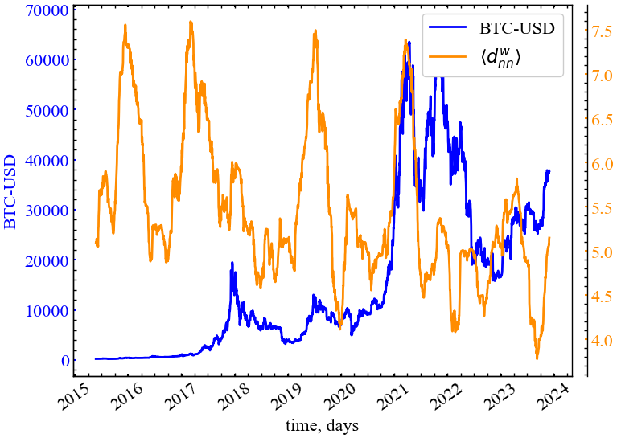
Як можна бачити з даного рисунка (Рис. 14.16), середня ступенева зв’язність зростає в передкризові періоди, що вказує на поступове зростання ступеня тяготіння вершин з високою степеневою центральністю до вершин із ще вищою центральністю.
14.2.2.3.2 Ступінь асортативності
Інша форма асортативного змішування залежить від однієї або декількох скалярних властивостей вершин мережі. Для його обчислення ми визначаємо матрицю \(e_{ij}\), яка задовольняє правилам додавання: \(\sum_{ij}e_{ij}=1\), \(\sum_{j}e_{ij}=a_i\), \(\sum_{i}e_{ij}=b_j\), де \(a_i\) та \(b_j\) — частки ребер, які починаються та закінчуються у вершинах \(i\) та \(j\). Розрахувавши коефіцієнт кореляції Пірсона, можна визначити ступінь асортативності (degree of assortativity) [33]. Таким чином, цей коефіцієнт асортативності обчислюється як
\[ r = \sum_{xy}xy(e_{xy} - a_{x}b_{y}) \Big/ \sigma_{a}\sigma_{b}, \tag{14.26}\]
а \(\sigma_{a}\) та \(\sigma_{b}\) визначають стандартні відхилення розподілів \(a_x\) та \(b_y\); \(-1 \leq r \leq 1\), де \(r<0\) вказує на вищу дизасортативність, \(r>0\) демонструє вищу асортативність, а \(r=0\) говорить про відсутність асортативності між вершинами.
plot_pair(time_ser.index[window:length:tstep],
time_ser.values[window:length:tstep],
indicators[0],
ylabel,
measure_labels[0],
xlabel,
file_names[0],
clr="darkgreen")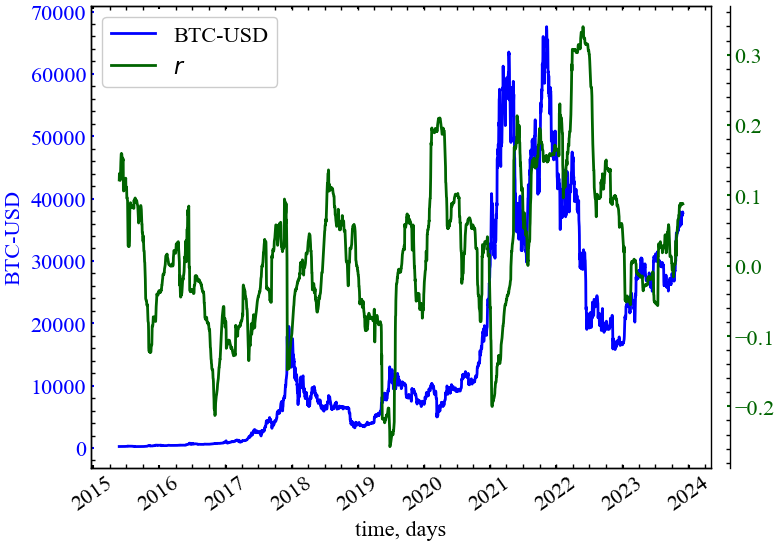
На Рис. 14.17 видно, що коефіцієнт асортативності спадає в передкризові періоди, що вказує на дизасортативну поведінку ринку в ці моменти часу: вершини з малим ступенем зв’язності й централізованості тяжіють до вершин, що характеризуються високим ступенем посередництва, гармонійності, інформаційності, близькості тощо. Як уже зазначалося, дизасортативність, що властива передкризовим періодам Біткоїна, характерна і як для реальних соціальних мереж, так і для складних біологічних мереж.
14.2.2.4 Кластеризація
У теорії графів, коефіцієнт кластеризації вказує на те, наскільки вузли у графі мають тенденцію групуватися. Дослідження показують, що у більшості реальних мереж, зокрема, у соціальних мережах, вузли зазвичай утворюють компактні групи з високою кількістю зв’язків між ними.
Для подальшого аналізу розглянемо показники транзитивності, глобальної тріадної і квадратичної кластеризацій.
Transitivity = []
AvgClustering = []
AvgSquareClustering = []for i in tqdm(range(0,length-window,tstep)):
# відбираємо фрагмент
fragm = time_ser.iloc[i:i+window].copy()
# виконуємо процедуру трансформації ряду
fragm = transformation(fragm, ret_type)
if graph_type == 'classic':
g = NaturalVG(directed=None).build(fragm)
pos = g.node_positions()
nxg = g.as_networkx()
if graph_type == 'horizontal':
g = HorizontalVG(directed=None).build(fragm)
pos = g.node_positions()
nxg = g.as_networkx()
# транзитивність
trans = nx.transitivity(nxg)
# глобальний коефіцієнт кластеризації
avg_clust = nx.average_clustering(nxg)
# коефіцієнт квадратичної кластеризації
avg_sqr_clust = np.mean(list(nx.square_clustering(nxg).values()))
Transitivity.append(trans)
AvgClustering.append(avg_clust)
AvgSquareClustering.append(avg_sqr_clust)100%|██████████| 3112/3112 [14:16<00:00, 3.63it/s]ind_names = ['AvgClustering', 'Transitivity', 'AvgSquareClustering']
indicators = [AvgClustering, Transitivity, AvgSquareClustering]
measure_labels = [r'$\langle C_3 \rangle$', r'$T$', r'$\langle C_4 \rangle$']
file_names = []
for i in range(len(ind_names)):
name = f"{ind_names[i]}_symbol={symbol}_wind={window}_step={tstep}_seriestype={ret_type}_graph_type={graph_type}"
np.savetxt(name + ".txt", indicators[i])
file_names.append(name)14.2.2.4.1 Коефіцієнт глобальної кластеризації
Для того, щоб охарактеризувати щільність зв’язків між сусідами вершини \(i\), ми можемо використати коефіцієнт локальної кластеризації:
\[ C_{i}^{3} = \sum_{k,j=1}^{N}A_{ik}A_{kj}A_{ji} \Bigg/ d_i(d_i - 1), \tag{14.27}\]
де чисельник позначає кількість закритих трикутників, що містять вершину \(i\).
Ми можемо розглядати глобальний коефіцієнт кластеризації (global clustering coefficient), як середнє арифметичне локального коефіцієнта кластеризації трикутників [34]:
\[ \langle C^{3} \rangle = \frac{1}{N}\sum_{i=1}^{N}C_{i}^{3}, \tag{14.28}\]
що вимірює середню схильність системи до утворення трикутних кластерів.
plot_pair(time_ser.index[window:length:tstep],
time_ser.values[window:length:tstep],
indicators[0],
ylabel,
measure_labels[0],
xlabel,
file_names[0],
clr="magenta")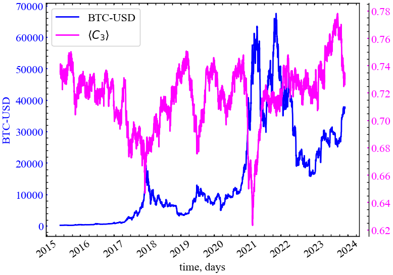
На Рис. 14.18 видно, що в абсолютних значеннях глобальний коефіцієнт тріадної кластеризації залишається на достатньо високому рівні, що говорить про досить високий ступінь кластеризації трейдерів криптовалютного ринку. Локально, в передкризові періоди, видно, що \(\langle C^{3} \rangle\) спадає, що говорить про локалізовану руйнацію кластеризованих групувань трейдерів і зростання їх тяжіння до одного або декількох гравців ринку.
14.2.2.4.2 Транзитивність
У випадку дуже неоднорідних степенів, тобто безмасштабних мереж, де лише кілька вершин мають високу степінь, а інші — низьку (\(d_i < 2\)), вершини з низькою степенню будуть брати участь переважно в обчисленні локального коефіцієнта кластеризації, що може призвести до недооцінки трикутних кластерів у мережі. Баррат і Вайгт [35] запропонували альтернативний підхід для подолання такої проблеми, який отримав назву транзитивності (transitivity) [36]:
\[ T = \sum_{k,j=1}^{N}A_{ik}A_{kj}A_{ji} \Bigg/ \sum_{i,k,j=1}^{N}A_{ik}A_{ji}. \tag{14.29}\]
У реальних мережах ми можемо зіткнутися з випадками, коли зв’язані сусіди в мережі можуть утворювати різні кліки (форми кластеризації). Класичний коефіцієнт локальної кластеризації, який вимірює імовірність знаходження трикутників, зазвичай відповідає одностороннім мережам. Однак він не може бути сформований у двосторонніх мережах [37,38]. Складні структури односторонніх, двосторонніх і багатосторонніх мереж реальної системи можуть призвести до утворення кластерів набагато вищого порядку.
plot_pair(time_ser.index[window:length:tstep],
time_ser.values[window:length:tstep],
indicators[1],
ylabel,
measure_labels[1],
xlabel,
file_names[1],
clr="crimson")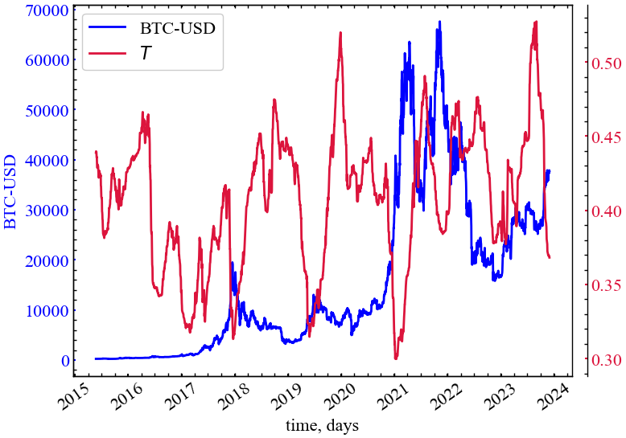
Показник транзитивності працює подібно до \(\langle C^{3} \rangle\). Однак, на відміну від \(\langle C^{3} \rangle\), він надає куди більше сигналів про подальшу крахову поведінку на ринку Біткоїна. Видно, що на ринку зберігається досить висока частка трикутних кліків, які стають неповними в передкризові періоди, на що і вказує спадання \(T\).
14.2.2.4.3 Коефіцієнт квадратичної кластеризації
Подібно до \(C_{i}^{3}\), який є класичним коефіцієнтом локальної кластеризації, було запропоновано кількісно оцінити коефіцієнт кластеризації \(C_{i}^{4}\) [39], який відповідає ймовірності знайти “квадратний” кластер, утворений сусідами вузла \(i\). Тобто, що два сусіди вузла \(i\) мають спільного сусіда, відмінного від \(i\). Для кожної вершини \(i\) вона може бути обчислена як
\[ C_{i}^{4} = \frac{\sum_{k=1}^{d_i}\sum_{j=k+1}^{d_i}q_i(k, j)}{\sum_{k=1}^{d_i}\sum_{j=k+1}^{d_i}[a_{i}(k, j) + q_i(k, j)]}, \tag{14.30}\]
де \(q_i(k, j)\) представляє кількість спостережуваних квадратних кластерів; \(a_i(k, j) = \left( d_k - (1+q_{i}(k, j) + \theta_{ki}) \right) + \left( d_{j} - (1 + q_{i}(k, j) + \theta_{kj}) \right)\); \(\theta_{kj}=1\) якщо \(k\) і \(j\) є зв’язними і 0 у зворотньому випадку [40]. Схожим чином до 14.28 ми можемо визначити глобальний коефіцієнт квадратичної кластеризації (global square clustering coefficient) як
\[ \langle C^{4} \rangle = \frac{1}{N}\sum_{i=1}^{N}C_{i}^{4}. \tag{14.31}\]
plot_pair(time_ser.index[window:length:tstep],
time_ser.values[window:length:tstep],
indicators[2],
ylabel,
measure_labels[2],
xlabel,
file_names[2],
clr="orange")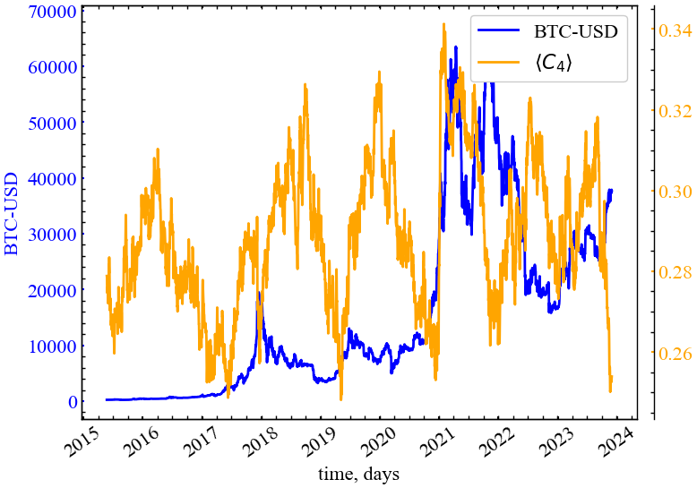
Рис. 14.20 демонструє, що глобально Біткоїн містить куди меншу частку квадратичних кластерів у порівнянні з тріадними. Локально ми спостерігаємо подібну до попередніх показників динаміку: \(\langle С_4 \rangle\) спадає в передкризовий період і поступово зростає в посткризовий. Можна зробити таке саме припущення, що й до цього: у передкризові періоди трейдери починають поступово ізолюватися від аналітики один одного і спрямовувати свою увагу на дії одного або декількох найбільш впливових груп. Хоча їх кластеризація спадає, але дії залишаються узгодженими згідно тієї інформації, що доходить до них із зовні.
14.2.2.5 Зв’язність
У математиці зв’язний граф — це граф, у якого кількість ребер наближається до максимально можливої (коли кожна пара вершин з’єднана одним ребром). І навпаки, розріджений граф містить лише невелику кількість ребер. Точне визначення того, який граф вважати зв’язним або розрідженим, є неоднозначним. Отже, визначення щільності графа може змінюватись у залежності від контексту задачі.
Density = []for i in tqdm(range(0,length-window,tstep)):
# відбираємо фрагмент
fragm = time_ser.iloc[i:i+window].copy()
# виконуємо процедуру трансформації ряду
fragm = transformation(fragm, ret_type)
if graph_type == 'classic':
g = NaturalVG(directed=None).build(fragm)
pos = g.node_positions()
nxg = g.as_networkx()
if graph_type == 'horizontal':
g = HorizontalVG(directed=None).build(fragm)
pos = g.node_positions()
nxg = g.as_networkx()
# розрахунок щільності
dens = nx.density(nxg)
Density.append(dens)100%|██████████| 3112/3112 [00:09<00:00, 325.08it/s]ind_names = ['Density']
indicators = [Density]
measure_labels = [r'$\rho$']
file_names = []
for i in range(len(ind_names)):
name = f"{ind_names[i]}_symbol={symbol}_wind={window}_step={tstep}_seriestype={ret_type}_graph_type={graph_type}"
np.savetxt(name + ".txt", indicators[i])
file_names.append(name)14.2.2.5.1 Щільність
Щільність (density) графа може допомогти визначити, наскільки густо заселений різними ребрами представлений граф. Чим вона вища, тим більшою є зв’язність досліджуваного графа. Її можна обчислити як
\[ \rho = E \big/ E_{max}, \tag{14.32}\]
де \(E\) дорівнює кількості ребер у \(G\), а \(E_{max}=N(N-1)/2\) — це максимальна кількість ребер у простому ненаправленому графі.
plot_pair(time_ser.index[window:length:tstep],
time_ser.values[window:length:tstep],
indicators[0],
ylabel,
measure_labels[0],
xlabel,
file_names[0],
clr="black")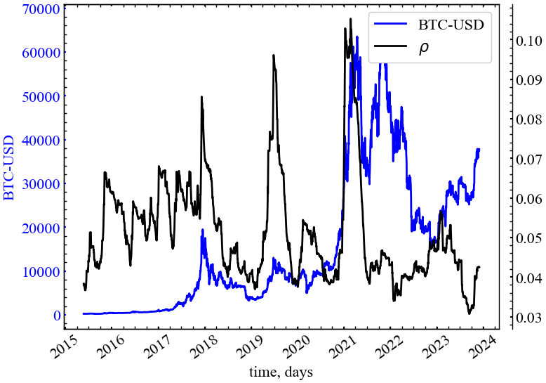
На рисунку можна бачити, що глобальна зв’язність ринку залишається досить низькою (\(\rho<0.10\)), що говорить про недостатньо високий рівень зв’язності між теперішніми та минулими вузлами цінових коливань ринку Біткоїна. Віконна динаміка \(\rho\) вказує на те, що в передкризовий момент часу ступінь щільності зв’язків учасників ринку зростає, що робить граф Біткоїна більш стійким.
14.2.2.6 Міри відстані
На основі довжини найкоротшого шляху графа ми можемо отримати безліч інших показників його ефективності або віддаленості його вершин від центру зв’язності досліджуваного графа.
Diameter = []
Radius = []for i in tqdm(range(0,length-window,tstep)):
# відбираємо фрагмент
fragm = time_ser.iloc[i:i+window].copy()
# виконуємо процедуру трансформації ряду
fragm = transformation(fragm, ret_type)
if graph_type == 'classic':
g = NaturalVG(directed=None).build(fragm)
pos = g.node_positions()
nxg = g.as_networkx()
if graph_type == 'horizontal':
g = HorizontalVG(directed=None).build(fragm)
pos = g.node_positions()
nxg = g.as_networkx()
# розрахунок діаметра
diameter = nx.diameter(nxg)
# розрахунок радіуса
rad = nx.radius(nxg)
Diameter.append(diameter)
Radius.append(rad)100%|██████████| 3112/3112 [05:54<00:00, 8.79it/s]ind_names = ['Diameter', 'Radius']
indicators = [Diameter, Radius]
measure_labels = [r'$diam$', r'rad']
file_names = []
for i in range(len(ind_names)):
name = f"{ind_names[i]}_symbol={symbol}_wind={window}_step={tstep}_seriestype={ret_type}_graph_type={graph_type}"
np.savetxt(name + ".txt", indicators[i])
file_names.append(name)14.2.2.6.1 Діаметр
Зауважимо, що найкоротший шлях, який є характеристикою відстані між досліджуваними вершинами \(i\) та \(j\), може бути використаний для характеристики загального розміру мережі. Величина, яка визначає найбільшу відстань між вершиною \(i\) та будь-якою іншою вершиною, називається ексцентриситетом (eccentricity):
\[ \varepsilon(i) = \max_{j}l_{ij}. \tag{14.33}\]
Розмір мережі можна охарактеризувати в термінах діаметру (diameter) і визначити як
\[ diam = \max_{i}\varepsilon(i) = \max_{i}\max_{j}l_{ij}. \tag{14.34}\]
plot_pair(time_ser.index[window:length:tstep],
time_ser.values[window:length:tstep],
indicators[0],
ylabel,
measure_labels[0],
xlabel,
file_names[0],
clr="magenta")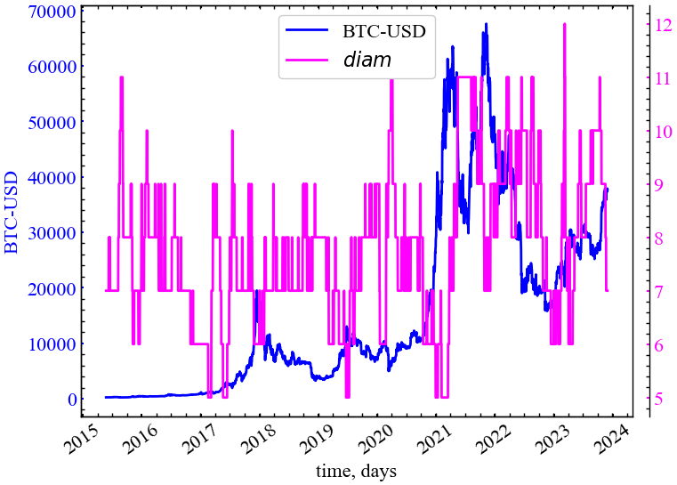
На Рис. 14.22 видно, що діаметр графа спадає в передкризовий період, що говорить про зближення верхньої границі графа до його центру. Тобто, інформація, що проходитиме на криптовалютному ринку від одного трейдера до іншого, займатиме набагато менше кроків. Іншими словами, у передкризові періоди трейдери все менше покладаються на посередників із різноманітних новинних ресурсів і більше часу відводять на пряме опрацювання торгівельних закономірностей на ринку.
14.2.2.6.2 Радіус
Таким чином, діаметр — це найбільша (максимальна) довжина шляху в мережі. Отже, ми можемо визначити найменший ексцентриситет досліджуваної мережі, який називається радіусом (radius):
\[ rad = \min_{i}\varepsilon(i) = \min_{i}\max_{j}l_{ij}. \tag{14.35}\]
plot_pair(time_ser.index[window:length:tstep],
time_ser.values[window:length:tstep],
indicators[1],
ylabel,
measure_labels[1],
xlabel,
file_names[1],
clr="crimson")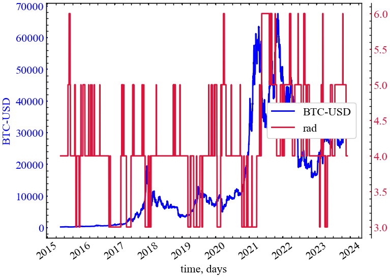
Оскільки радіус графа це найменший ексцентриситет мережі, а діаметр є найбільшим, можна зробити подібний висновок. Якщо придивитися, то можна помітити, що радіус представляє приблизно в двічі меншу за діаметр версію, але тренд цих обох індикаторів ідентичний.
14.2.2.7 Ефективність
У галузі мережної науки ефективність мережі (network efficiency) в передачі інформації, яку також називають комунікаційною ефективністю, є ключовою метрикою. Це поняття ґрунтується на припущенні, що чим далі один від одного знаходяться два вузли в мережі, тим менш ефективною стає їхня комунікація. Ефективність можна аналізувати як на локальному, так і на глобальному рівнях мережі. На глобальному рівні оцінюється загальний обмін інформацією по всій мережі, де інформаційні потоки протікають паралельно. На локальному рівні вимірюється стійкість мережі до збоїв у менших масштабах. Зокрема, локальна ефективність вузла i відображає, наскільки ефективно його сусіди обмінюються інформацією за його відсутності.
LocalEfficiency = []
GlobalEfficiency = []for i in tqdm(range(0,length-window,tstep)):
# відбираємо фрагмент
fragm = time_ser.iloc[i:i+window].copy()
# виконуємо процедуру трансформації ряду
fragm = transformation(fragm, ret_type)
if graph_type == 'classic':
g = NaturalVG(directed=None).build(fragm)
pos = g.node_positions()
nxg = g.as_networkx()
if graph_type == 'horizontal':
g = HorizontalVG(directed=None).build(fragm)
pos = g.node_positions()
nxg = g.as_networkx()
# розрахунок локальної ефективності
local_eff = nx.local_efficiency(nxg)
# розрахунок глобальної ефективності
glob_eff = nx.global_efficiency(nxg)
LocalEfficiency.append(local_eff)
GlobalEfficiency.append(glob_eff)100%|██████████| 3112/3112 [30:31<00:00, 1.70it/s] ind_names = ['LocalEfficiency', 'GlobalEfficiency']
indicators = [LocalEfficiency, GlobalEfficiency]
measure_labels = [r'$E_{loc}$', r'$E_{glob}$']
file_names = []
for i in range(len(ind_names)):
name = f"{ind_names[i]}_symbol={symbol}_wind={window}_step={tstep}_seriestype={ret_type}_graph_type={graph_type}"
np.savetxt(name + ".txt", indicators[i])
file_names.append(name)14.2.2.7.1 Глобальна ефективність
Визначення поведінки в малому світі згідно з [30] можна подати в термінах ефективності \(E\) мережі. Ефективність \(\varepsilon_{ij}\) між вершинами \(i\) та \(j\) визначається як \(1/l_{ij}\). Коли \(l_{ij}=\infty\) і, послідовно, якщо \(1/l_{ij}=0\), \(i\) і \(j\) вважаються роз’єднаними. Відповідно до формалізму ефективності, вона може бути кількісно визначена як для глобальних, так і для локальних масштабів \(G\). Латора та Марчіорі підкреслювали, що \(1/L\) та \(C\) можна розглядати як перші наближення глобальної \(\left( E_{glob} \right)\) та локальної \(\left( E_{loc} \right)\) ефективності.
Середню (глобальну) ефективність \(G\) можна визначити як
\[ E_{glob} = \sum_{i,j=1}\left( l_{ij} \right)^{-1} \Big/ N(N-1). \tag{14.36}\]
Для найбільш ефективного графа, де інформація поширюється найбільш ефективно, \(E_{glob}\) набуває максимального значення, а в іншому випадку — мінімального.
plot_pair(time_ser.index[window:length:tstep],
time_ser.values[window:length:tstep],
indicators[1],
ylabel,
measure_labels[1],
xlabel,
file_names[1],
clr="indigo")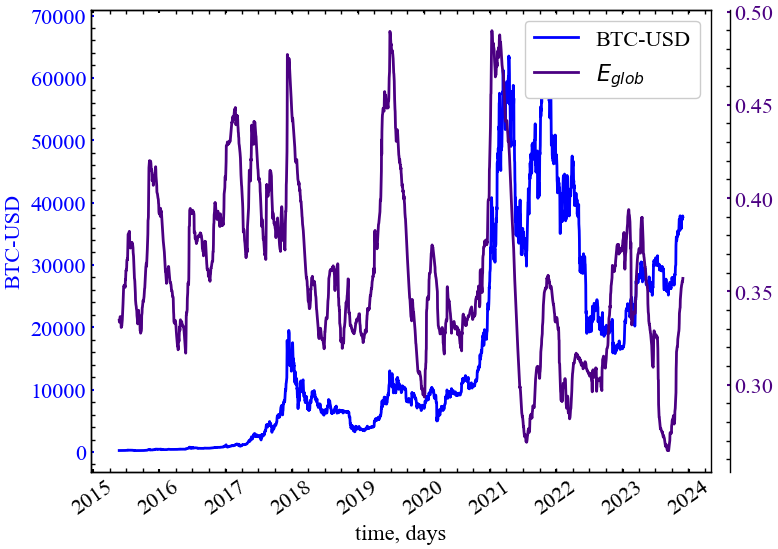
На Рис. 14.24 видно, що ступінь глобальної ефективності мережі зростає в передкризові періоди, що вказує на зростання ступеня проходження інформації в мережі. З точки зору графа видимості, Біткоїн починає діяти в більш детермінований спосіб, де зв’язність його графа видимості стає близькою до топології ідеального графа, де вся інформація передається в найефективніший спосіб.
14.2.2.7.2 Локальна ефективність
Локальна ефективність відіграє роль, подібну до глобального коефіцієнта кластеризації. Локальна ефективність \(E_{loc}\) може бути кількісно визначена як
\[ E_{loc} = \frac{1}{N}\sum_{i \in G_i}E_{glob}(G_i), \tag{14.37}\]
де \(G_i\) — локальний підграф \(G\), а \(E_{glob}(G_i)\) характеризує ефективність цього конкретного підграфа. Подібно до глобального коефіцієнта кластеризації, \(E_{loc}\) визначає, наскільки відмовостійкою є досліджувана система, тобто наскільки ефективним є транспортування інформації між першими сусідами \(i\)-го вузла при його видаленні.
plot_pair(time_ser.index[window:length:tstep],
time_ser.values[window:length:tstep],
indicators[0],
ylabel,
measure_labels[0],
xlabel,
file_names[0],
clr="orange")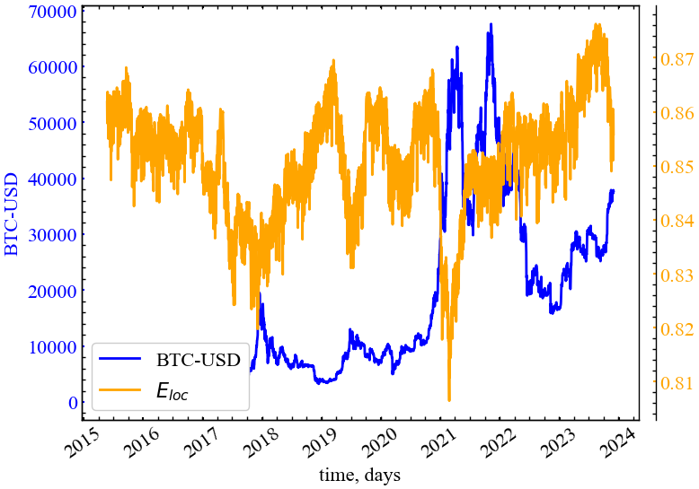
Глобально, \(E_{loc}\approx0.85\) для ринку Біткоїна, що вказує на глобальну стійкість криптовалютної мережі до можливих атак і виключень трейдерів ринку з глобальної торгівлі. Віконна процедура показує, що \(E_{loc}\) спадає в передкризові періоди, що вказує на спад локальної ефективності мережі. Як уже зазначалося, оскільки увага більшості спрямовується на одного або декількох крупних гравців ринку, їх потенційне відключення з глобальної торгівлі могло б дестабілізувати весь криптовалютний ринок.
14.2.2.8 Найкоротший шлях
AvgPathLength = []for i in tqdm(range(0,length-window,tstep)):
# відбираємо фрагмент
fragm = time_ser.iloc[i:i+window].copy()
# виконуємо процедуру трансформації ряду
fragm = transformation(fragm, ret_type)
if graph_type == 'classic':
g = NaturalVG(directed=None).build(fragm)
pos = g.node_positions()
nxg = g.as_networkx()
if graph_type == 'horizontal':
g = HorizontalVG(directed=None).build(fragm)
pos = g.node_positions()
nxg = g.as_networkx()
# розрахунок середньої довжини найкоротшого шляху
avg_path_len = nx.average_shortest_path_length(nxg)
AvgPathLength.append(avg_path_len)100%|██████████| 3112/3112 [03:04<00:00, 16.84it/s]ind_names = ['AvgPathLength']
indicators = [AvgPathLength]
measure_labels = [r'$ApLen$']
file_names = []
for i in range(len(ind_names)):
name = f"{ind_names[i]}_symbol={symbol}_wind={window}_step={tstep}_seriestype={ret_type}_graph_type={graph_type}"
np.savetxt(name + ".txt", indicators[i])
file_names.append(name)14.2.2.8.1 Середня довжина найкоротшого шляху
Звертаючи увагу на довжину найкоротшого шляху між двома вершинами \(i\) та \(j\), ми можемо визначити таку міру, як середня довжина найкоротшого шляху (average shortest path length):
\[ ApLen = \sum_{i \neq j}l_{ij} \Big/ N(N-1). \tag{14.38}\]
plot_pair(time_ser.index[window:length:tstep],
time_ser.values[window:length:tstep],
indicators[0],
ylabel,
measure_labels[0],
xlabel,
file_names[0],
clr="deeppink")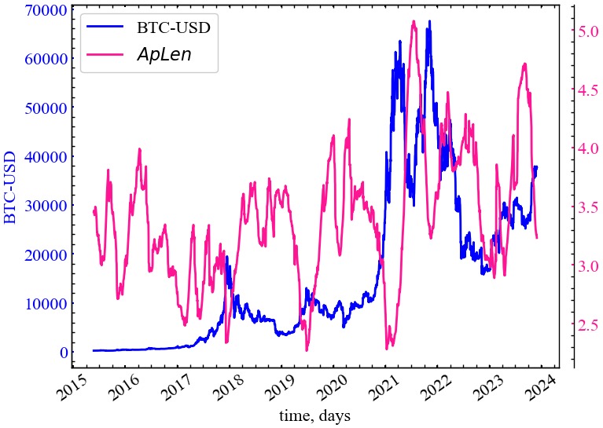
На Рис. 14.26 продемонстровано, що \(ApLen\) характеризується спадом у передкризові періоди та зростанням у кризові й посткризові періоди. Подібно до попередніх індикаторів, що тільки опиралися на довжини найкоротшого шляху між парами вершин, \(ApLen\) вказує на зростання ефективності передачі інформації між трейдерами ринку. Також можна сказати, що на побудованому криптовалютному графі видимості минулі значення “бачать” теперішні в більш ефективний спосіб, що відображається в персистентності ринку в передкризовий період.
14.2.2.8.2 Коефіцієнт малосвітовості (Small-Worldness)
Малосвітовість — це міра того, наскільки граф поводиться як мережа «малого світу». Для мереж малого світу типовa відстань між будь-якими двома випадково вибраними вершинами зростає логарифмічно зі збільшенням загальної кількості вершин графа [30]. Оскільки логарифмічні функції зростають дуже повільно, це відповідає малим середнім довжинам найкоротших шляхів і високим значенням глобальної ефективності та коефіцієнтів кластеризації. Міру малосвітовості \(S\) було запропоновано Гамфрісом і Гурнеєм [41] як
\[ S \;=\; \frac{C/C_r}{L/L_r}, \tag{14.39}\]
де \(C,\,C_r\) — середні коефіцієнти кластеризації відповідно досліджуваного графа та випадкового графа, а \(L,\,L_r\) — середні довжини найкоротших шляхів між усіма парами вершин у досліджуваному та випадковому графах. Наші випадкові графи генерувалися за моделлю Ердеша-Реньї.
У комірці нижче представлено код функції для розрахунку коефіцієнта малосвітовості:
def small_world(G, random_seed=0):
num_graphs = 10
counter = 0
V = nx.number_of_nodes(G)
E = nx.number_of_edges(G)
C_rand = 0
L_rand = 0
random_graphs_L = np.zeros(num_graphs)
while counter < num_graphs:
erdos_renyi_graph = nx.gnm_random_graph(V, E, random_seed)
if not nx.is_connected(erdos_renyi_graph):
c, l, num_subgraphs = 0, 0, 0
for connected_component in nx.connected_component_subgraphs(erdos_renyi_graph):
num_subgraphs += 1
c += nx.average_clustering(connected_component)
l += nx.average_shortest_path_length(connected_component)
c /= num_subgraphs
l /= num_subgraphs
else:
c, l = nx.average_clustering(erdos_renyi_graph), nx.average_shortest_path_length(erdos_renyi_graph)
C_rand += c
L_rand += l
counter += 1
C_g, L_g = nx.average_clustering(G), nx.average_shortest_path_length(G)
C_rand /= num_graphs
L_rand /= num_graphs
return (C_g/C_rand)/(L_g/L_rand)Приступимо до розрахунку цього показника:
Small_Worldness = []for i in tqdm(range(0,length-window,tstep)):
# відбираємо фрагмент
fragm = time_ser.iloc[i:i+window].copy()
# виконуємо процедуру трансформації ряду
fragm = transformation(fragm, ret_type)
if graph_type == 'classic':
g = NaturalVG(directed=None).build(fragm)
pos = g.node_positions()
nxg = g.as_networkx()
if graph_type == 'horizontal':
g = HorizontalVG(directed=None).build(fragm)
pos = g.node_positions()
nxg = g.as_networkx()
# розрахунок малосвітовості для графа видимості
sw = small_world(nxg)
Small_Worldness.append(sw)100%|██████████| 3112/3112 [30:19<00:00, 1.71it/s]ind_names = ['Small-Worldness']
indicators = [Small_Worldness]
measure_labels = [r'$S$']
file_names = []
for i in range(len(ind_names)):
name = f"{ind_names[i]}_symbol={symbol}_wind={window}_step={tstep}_seriestype={ret_type}_graph_type={graph_type}"
np.savetxt(name + ".txt", indicators[i])
file_names.append(name)plot_pair(time_ser.index[window:length:tstep],
time_ser.values[window:length:tstep],
indicators[0],
ylabel,
measure_labels[0],
xlabel,
file_names[0],
clr="tomato")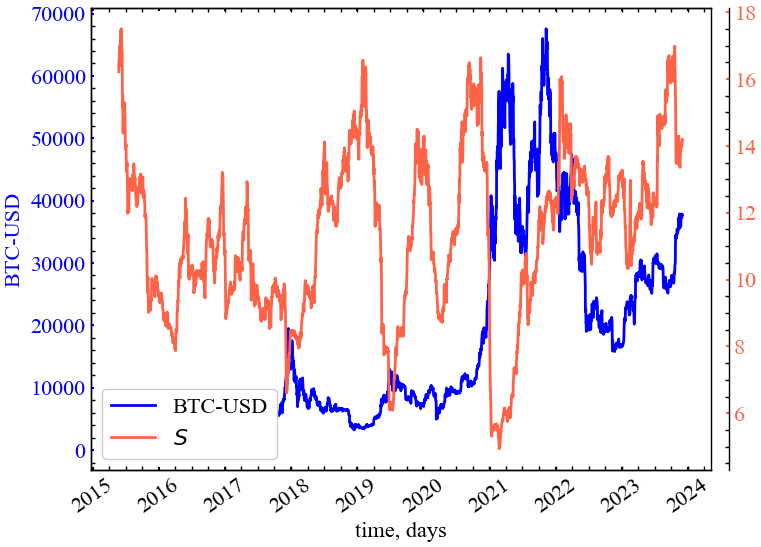
З огляду на графік, ковзне вікно показує, що малосвітовість \(S\) у біткоїна помітно «дихає» разом зі зміною ринкових режимів. Нагадаємо, що \(S=(C/C_r)/(L/L_r)\) порівнює кластери та середні найкоротші шляхи у видимісному графі з випадковим еталоном: великі значення означають поєднання високої кластеризації з короткими шляхами, малі — розпад локальних мотивів або подовження шляхів. У часових рядах це зазвичай відповідає такій інтерпретації: коли динаміка більш організована, хвилеподібна й має чіткі локальні екстремуми, у графі виникає багато трикутників і «шорткатів», тож \(S\) зростає; коли ціна переходить у різкий тренд чи вибухову волатильність, локальні мотиви руйнуються, граф стає ближчим до «ланцюжка», середні шляхи подовжуються, і \(S\) провалюється.
На вашому рисунку червона крива \(S\) формує виразні багатомісячні хвилі, які добре узгоджуються з великими фазами ринку. Падіння \(S\) помітні поблизу періодів різких зрушень ціни — після піку 2017-го, під час імпульсів 2021-го та в спаді 2022-го. В ці моменти ціна рухалася одноманітно й сильно, структура видимості втрачала трикутні мотиви, а відстані в графі збільшувалися, тому індекс малосвітовості падав. Навпаки, під час триваліших «перепочинків» і бокових рухів (наприклад, значні відрізки 2019 року та окремі ділянки 2021-2023 років) \(S\) підіймався до високих плато: локальні коливання створювали кластери, екстремуми давали «хаби», і шляхи між вершинами скорочувалися. Візуально видно, що \(S\) переважно перевищує одиницю, тож у більшості вікон мережа має властивість «малого світу» сильнішу за випадковий еталон, але амплітуда коливань велика — саме вона й відбиває переходи між структурованими та імпульсними режимами.
Є ще два практичні нюанси, які важливо тримати в голові під час інтерпретації. По-перше, на шкалі правої осі \(S\) сягає доволі високих значень; це можливо, коли відношення \(C/C_r\) значно більше за одиницю та/або \(L/L_r\) помітно менше за одиницю. Щоб переконатися, що величини не викликані артефактами, бажано порівнювати з ансамблем випадкових графів із тим самим числом вершин і середнім степенем, обчислювати середнє та довірчі інтервали й рахувати \(L\) принаймні на найбільшій зв’язній компоненті. По-друге, характер хвиль у \(S\) може залежати від розміру та перекриття вікна, а також від типу видимісного графа (NVG чи HVG); якщо повторити побудову для кількох масштабів, можна побачити, чи провали \(S\) стабільно передують сплескам волатильності або збігаються з ними. У сумі картина узгоджується з інтуїцією: \(S\) поводиться як індикатор режиму — підвищується в періоди впорядкованої, «коливальної» структури ринку і знижується, коли ринок входить у фазу сильних імпульсів або стресу.
14.2.2.8.3 Вартісь задачі комівояжера (Cost of Traveling Salesman Problem, TSP)
Задача комівояжера формулюється так: який тур мінімальної вартості в графі починається з деякої вершини, відвідує всі інші вершини й повертається до початкової [42]? Цю задачу складно ефективно розв’язувати обчислювально [43], тому застосовано детерміністичний апроксимаційний алгоритм, що переоцінює розв’язок не більш ніж у 2 рази [42]. Оскільки у наших графах видимості всі ваги ребер дорівнюють 1, це фактично зводиться до пошуку найкоротшого туру, який проходить через усі вершини та починається й закінчується у вершині, що відповідає першому часовому відліку досліджуваного ряду. Вартість маршруту TSP надає ще одну міру складності графа, здатну виявляти суттєві відмінності у структурі складних систем.
У комірці нижче представлено код для оцінки найкоротшого шляху в задачі комівояжера:
def tsp_approx(G):
T = nx.minimum_spanning_tree(G)
dfs = nx.dfs_preorder_nodes(T, 0)
node_list = []
for item in dfs:
node_list.append(item)
node_list.append(0)
path = [0]
for i in range(len(node_list) - 1):
path.pop()
path += nx.dijkstra_path(G, node_list[i], node_list[i + 1])
total_cost = len(path)
return total_costРозрахуємо даний показник для нашого ряду:
Travelling_Prob = []for i in tqdm(range(0,length-window,tstep)):
# відбираємо фрагмент
fragm = time_ser.iloc[i:i+window].copy()
# виконуємо процедуру трансформації ряду
fragm = transformation(fragm, ret_type)
if graph_type == 'classic':
g = NaturalVG(directed=None).build(fragm)
pos = g.node_positions()
nxg = g.as_networkx()
if graph_type == 'horizontal':
g = HorizontalVG(directed=None).build(fragm)
pos = g.node_positions()
nxg = g.as_networkx()
# розрахунок вартості задачі комівояжера
tsp = tsp_approx(nxg)
Travelling_Prob.append(tsp)100%|██████████| 3112/3112 [02:03<00:00, 25.25it/s]ind_names = ['Travelling-Problem']
indicators = [Travelling_Prob]
measure_labels = [r'$TSP$']
file_names = []
for i in range(len(ind_names)):
name = f"{ind_names[i]}_symbol={symbol}_wind={window}_step={tstep}_seriestype={ret_type}_graph_type={graph_type}"
np.savetxt(name + ".txt", indicators[i])
file_names.append(name)plot_pair(time_ser.index[window:length:tstep],
time_ser.values[window:length:tstep],
indicators[0],
ylabel,
measure_labels[0],
xlabel,
file_names[0],
clr="darkorange")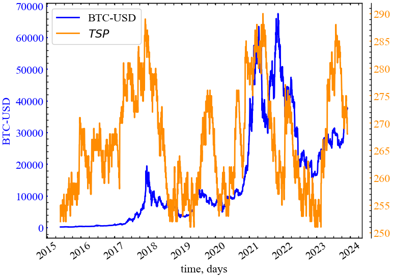
Якщо трактувати TSP у видимісному графі як «вартість обійти мережу існуючими ребрами та повернутися в стартову вершину», то це фактично міра того, наскільки топологія графа близька до ланцюжка чи, навпаки, містить багато «шорткатів». За одиничних ваг ребер нижня межа маршруту — близько \(N\) (якщо існує майже гамільтонів цикл), а верхня — порядку \(2(N-1)\) для розріджених, майже лінійних структур. Отже, високий TSP означає, що граф бідний на альтернативні шляхи (спостерігаємо довгі «проходи» без трикутників); низький TSP з’являється, коли є багато локальних петель і коротких переходів між далекими по часу точками.
На Рис. 14.28 TSP різко зростає в періоди виражених трендів — наприклад, у ході передтопової фази 2017 року та особливо під час бул-рана 2020–поч. 2021-го. Це логічно: сильний дрейф робить видимість «лінійнішою», послідовні спостереження блокують далекі з’єднання, мережа стає схожою на ланцюг, і найкоротший тур подовжується майже до подвоєної довжини. Коли ж ринок переходить у турбулентні або діапазонні стани — одразу після краху 2018 року, у ковідній турбулентності 2020-го, а також під час ведмежого ринку 2022-го — крива TSP опускається: коливальна структура породжує більше трикутників і «шорткатів», тож обійти всі вершини стає дешевше. У 2023 році видно поступове відновлення вартості маршруту разом із відновленням трендовості — TSP повертається до середньо-високих значень.
У підсумку TSP тут поводиться як індикатор режиму: зростання сигналізує про домінування спрямованих трендів і розріджену видимісну топологію, падіння — про багату на локальні «петлі» динаміку з чергуванням екстремумів.
14.3 Висновок
У даній роботі було продемонстровано можливість дослідження складних соціально-економічних систем в рамках мережної парадигми складності. Часовий ряд Біткоїна був представлений еквівалентним чином — мережею видимості, яка має широкий спектр характеристик: і спектральних, і топологічних. Приклади криптовалютних крахів показали, що більшість мережних показників можуть слугувати індикаторами-передвісниками кризових явищ і можуть бути використані для можливого раннього попередження небажаних криз на криптовалютних ринках.
14.4 Завдання для самостійної роботи
- Для заданих часових рядів чи їх сукупності побудувати всі види мереж, дослідити їх графодинаміку, порівняти результати і зробити висновки щодо їх прогностичних можливостей
- Проаналізувати результати як для вихідного ряду, так і для стандартизованих прибутковостей.
- Як змінюються результати для не фінансових часових рядів. Чи спостерігається універсальність результатів?